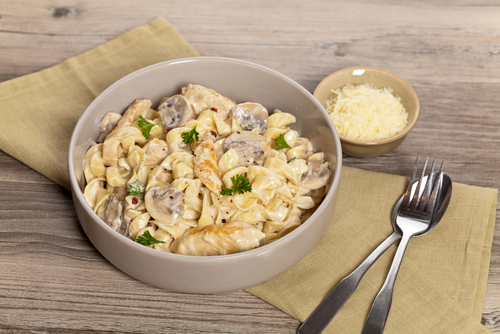

Italia este o destinaţie de vis pentru oricine
iubeşte mâncarea şi băutura bună. Dar nu e nevoie
să călătoreşti ca să te delectezi cu deliciile italiene. Poţi aduce Italia la tine
acasă dacă încerci reţetele delicioase de paste sau pizza.
Paste cremoase cu ciuperci

Cea mai simplă și gustoasă rețetă de paste cu ciuperci este rețeta pe care ți-am pregătit-o mai jos. Rețeta se face din ingrediente simple,
puține și deloc costisitoare, în timp record și cu minimum de efort.
Ingrediente:
200 g paste;
200-350 g ciuperci;
2-3 linguri de unt;
1 lingură de ulei de măsline;
2 căței usturoi;
1/2 ceapă, tocată fin;
200 g parmezan ras;
Mod de preparare:
Pastele se fierb conform instrucțiunilor de pe pachet, dar cu un minut mai puțin.
Păstrează o cană de apă de la paste, separat și apoi scurge-le pe restul.
Feliază ciupercile. Topește 1 lingură de unt la foc mic, într-o tigaie mare. Călește un minut ceapa și usturoiul.
Dă focul mai mare, adaugă ciupercile și lasă-le la făcut până când se evaporă apa din ele. Mai lasă-le pe foc încă 5 minute, până când încep să se rumenească.
Adaugă restul de 2 linguri de unt și amestecă până se topește.
Adaugă pastele, 3 sferturi din apa ținută de la paste și parmezanul ras. Amestecă ușor și cât mai larg pentru a cuprinde toată compoziția și continuă până începe să se formeze sosul cremos pentru paste. Dacă pastele par uscate, mai adaugă apă.
Asezonează cu sare și piper.
Timp de preparare: 2h
Esti curios cat timp iti va lua prepararea acestei gustari?